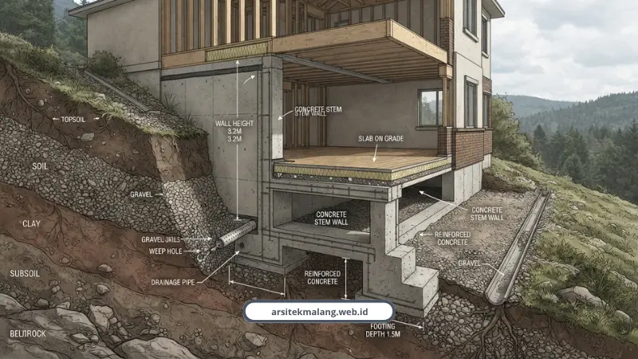

Ringkasan Inti
- Membangun di lereng Dau, Batu, Karangploso, dan Sengkaling lebih hemat dan aman dengan mengikuti kontur alam daripada meratakan bukit secara paksa.
- Konsep split level memanfaatkan beda elevasi tanah hingga memangkas biaya galian tanah (cut and fill) hingga 40 persen.
- Efek sirkulasi pasif dari void tangga dan skylight berjalusi mereduksi pemakaian AC sebesar 60–80 persen atau hemat listrik hingga Rp1 juta per bulan.
- Menghindari risiko longsor saat lereng jenuh air hujan memerlukan pondasi dalam (bored pile/cakar ayam), retaining wall ber-weep hole, serta terasering tanaman berakar dalam.
- Sesuai Perda Kota Malang No. 1/2004 Pasal 24, dinding penahan tanah setinggi 2 meter atau lebih wajib dihitung dan dianalisis oleh konsultan perencana ahli berizin serta ber-PBG.
Daftar Isi Artikel
- Kenapa Lahan Miring di Malang Nggak Bisa Didesain Asal-asalan?
- Split Level: Cara Kerja Bareng Kontur, Bukan Melawannya
- Model Desain Kreatif Apa Saja yang Cocok untuk Lahan Miring?
- Bagaimana Menghindari Risiko Longsor Saat Musim Hujan?
- Split Level Itu Sebenarnya Konsep Seperti Apa?
- Berapa Kisaran Biaya Membangun di Lahan Miring?
- Apa Saja Layanan dan Kapabilitas Arsitek Malang untuk Lahan Berkontur?
- Aturan Perizinan Apa Saja yang Wajib Dipatuhi?
- FAQ Seputar Desain Rumah Lahan Miring Malang
Desain rumah lahan miring yang tepat di Malang bukan soal meratakan tanah habis-habisan, tapi mengikuti kontur alaminya. Dengan pendekatan split level, beda ketinggian tanah bisa disulap jadi teras bertingkat sekaligus memangkas biaya galian sampai 40 persen.
Kenapa Lahan Miring di Malang Nggak Bisa Didesain Asal-asalan?
Kawasan seperti Dau, Batu, Karangploso, dan Sengkaling itu didominasi lereng perbukitan. Bukan tanah datar yang tinggal digambar denah kotak lalu dibangun begitu saja.
Kesalahan paling sering saya temui, calon pemilik rumah memaksakan denah rumah lahan datar ke atas tanah berkontur. Hasilnya dua-duanya jelek:
- Biaya fondasi membengkak karena harus meratakan tanah dalam jumlah besar.
- Risiko longsor meningkat, terutama pas musim hujan waktu tanah jenuh air.
Padahal kalau didekati dengan benar, kontur itu justru bisa jadi nilai jual. Ini yang sering luput dipikirkan orang yang baru beli kavling di perbukitan Malang Raya.
Split Level: Cara Kerja Bareng Kontur, Bukan Melawannya
Muhammad Musyaffa, arsitek berlisensi IAI Malang, punya prinsip yang saya rasa paling pas menggambarkan filosofi ini.
"Kunci sukses membangun villa di kawasan Dau adalah bekerja bersama kontur alam, bukan melawannya. Dengan konsep split level, perbedaan elevasi tanah justru dimanfaatkan jadi teras bertingkat, mezzanine melayang, dan rooftop deck panoramik dengan efisiensi biaya galian tanah hingga 40 persen."
Arsitek praktisi Denny Setiawan menambahkan alasan teknisnya. Daerah berkontur bisa turun sampai 1,5 meter, jadi split level dipakai supaya proses cut and fill tanah nggak perlu masif.
Beberapa keuntungan konkret dari pendekatan ini:
- Tangga lebih pendek, cuma butuh sekitar 11 anak tangga dibanding 24 anak tangga pada rumah dua lantai biasa.
- Void tangga dan skylight berjalusi bikin sirkulasi udara pasif jalan otomatis, mengurangi pemakaian AC sampai 60-80 persen atau hemat listrik Rp600 ribu sampai Rp1 juta per bulan.
- Cahaya alami masuk lebih maksimal lewat perbedaan level lantai.
Konsekuensinya, penambahan balok struktur antar-tingkat menambah biaya sekitar 10-15 persen dari total konstruksi. Tapi menurut Denny, ini jauh lebih aman dan efisien dibanding meratakan lahan miring secara paksa.

Model Desain Kreatif Apa Saja yang Cocok untuk Lahan Miring?
Ada lima pendekatan yang paling sering saya rekomendasikan untuk lahan berkontur di Malang Raya:
- Split-Level Minimalis, mengikuti elevasi alami tanah tanpa galian besar.
- Rumah Panggung Modern, pakai kolom baja atau beton bertulang, area bawahnya jadi carport atau gudang.
- Struktur Cascade, layout bertingkat menurun mengikuti lereng dengan view panoramik di tiap lantai.
- Cantilever Minimalis, sebagian bangunan melayang dengan struktur rangka kokoh, tampilan futuristik.
- Basement Setengah Tanam, memanfaatkan lereng untuk garasi atau ruang kerja tanpa penggalian dalam.
Arsitek IAI Malang A. Indra Permana dan A. Bima Satya bahkan membuktikan lahan berkontur atau hook bisa diolah mewah lewat integrasi inner courtyard, menara pengawas, dan kolam pendingin udara alami.
Bagaimana Menghindari Risiko Longsor Saat Musim Hujan?
Risiko longsor paling tinggi justru muncul saat kondisi lereng kena rembesan air hujan ditambah beban bangunan di atasnya. Nilai Faktor Keamanan (FK) lereng turun paling drastis di titik ini.
Air hujan yang meresap bikin tanah jenuh air, tekanan hidrostatik naik, dan itu yang memicu pergeseran fondasi atau dinding retak. Untuk menekan risiko ini, ada beberapa teknik rekayasa yang wajib diperhitungkan:
- Fondasi dalam seperti bored pile, tiang pancang, atau cakar ayam yang menancap ke lapisan tanah keras.
- Perhitungan dinding penahan tanah yang presisi, lengkap dengan saluran resapan atau weep holes untuk menahan tekanan lateral tanah di elevasi tinggi.
- Terasering bertingkat plus vegetasi berakar dalam seperti akar wangi, yang bisa menekan laju erosi sampai 90 persen.
- Manajemen drainase lewat parit tepi, saluran bawah tanah, dan sumur resapan.
Soal perhitungan detail dinding penahan tanah ini penting banget, apalagi untuk lereng di kawasan Batu yang karakter tanahnya cenderung berpasir dan gampang labil kalau kena hujan deras.
Catatan Arsitek Malang
Jangan pernah menutup atau menyemen lubang sulingan (weep holes) pada dinding penahan tanah lereng. Weep holes berfungsi vital membuang akumulasi air tanah di balik dinding saat musim hujan, sehingga tekanan hidrostatik tidak menumpuk dan memicu keretakan atau kegagalan struktur retaining wall.
Split Level Itu Sebenarnya Konsep Seperti Apa?
Banyak yang masih bingung membedakan split level dengan rumah dua lantai biasa. Intinya, split level itu membagi ketinggian lantai per setengah tingkat, bukan satu lantai penuh sekaligus.
Setiap level tetap terhubung secara visual lewat void, jadi rumah kerasa lapang meski dibangun di lahan sempit atau miring sekalipun. Zonasi ruang juga jadi lebih jelas, dari area publik di level bawah sampai kamar tidur di level paling atas.
Kalau mau lihat variasi penerapannya lebih detail, termasuk plus minusnya untuk lahan di Malang Barat, Tidar, sampai Sengkaling, saya sudah bahas lengkap di inspirasi desain split level untuk lahan berkontur Malang Raya.
Berapa Kisaran Biaya Membangun di Lahan Miring?
Ini pertanyaan yang hampir selalu muncul di sesi konsultasi. Jawaban singkatnya, biaya di lahan miring memang lebih tinggi dibanding lahan datar karena ada komponen tambahan seperti uji geoteknik dan dinding penahan.
Supaya nggak kaget di tengah jalan, saya sudah breakdown detail per komponen mulai dari cut and fill, sewa alat berat, sampai harga dinding penahan tanah per meter lari sesuai acuan Perbup Malang, di artikel estimasi biaya desain lahan miring.
Apa Saja Layanan dan Kapabilitas Arsitek Malang untuk Lahan Berkontur?
Kami sudah menangani lebih dari 150 proyek dalam 10 tahun terakhir dengan tingkat kepuasan klien mencapai 98 persen. Bukan angka yang saya karang, itu rekam jejak yang bisa dicek langsung dari portofolio kami.
Layanan yang kami sediakan untuk lahan berkontur meliputi:
- Paket Jasa Arsitek 3D/Pasif seharga Rp70.000 sampai Rp150.000 per meter persegi, sudah termasuk denah 2D, DED komplit, simulasi udara pasif, dan render 3D 4K.
- Paket Kontraktor Turnkey dengan RAB mengikat dan garansi struktur resmi.
- Konsultan bersertifikat IAI/STRA untuk memastikan legalitas PBG lewat SIMBG aman dari awal.
Testimoni klien juga cukup konsisten soal ini. Andi Pratama, pengusaha di Malang, bilang konsultasi gratis sangat membantu dan hasil akhir melebihi ekspektasinya. Maya Sari di Batu juga menyebut pembangunan selesai tepat waktu sesuai jadwal.
Kalau lahan Anda di Malang, Batu, Dau, atau Karangploso berkontur dan masih bingung mulai dari mana, silakan cek langsung layanan kami di sini untuk konsultasi awal.
Aturan Perizinan Apa Saja yang Wajib Dipatuhi?
Setiap pembangunan atau renovasi di Pemkot maupun Pemkab Malang wajib mengurus PBG lewat sistem SIMBG resmi, nggak ada jalan pintas untuk ini.
Khusus dinding penahan tanah, Perda Kota Malang No. 1 Tahun 2004 Pasal 24 Ayat 5d dan 6 mewajibkan DPT dengan ketinggian 2 meter atau lebih dihitung dan dianalisis oleh konsultan perencana ahli berizin.
Selain itu, ada kewajiban mematuhi Garis Sempadan Bangunan, Koefisien Dasar Bangunan, serta menyediakan sumur resapan air hujan di pekarangan.
Lahan miring di Malang bukan masalah yang harus dihindari, tapi peluang yang perlu didekati dengan cara yang benar. Split level, perhitungan struktur yang presisi, dan kepatuhan pada regulasi adalah tiga hal yang nggak bisa ditawar.
Kalau semua itu diperhitungkan sejak awal, kontur tanah yang tadinya kelihatan merepotkan justru bisa jadi rumah dengan view terbaik di seantero perbukitan Malang Raya.
FAQ Seputar Desain Rumah Lahan Miring Malang
Apakah rumah di lahan miring lebih rawan roboh dibanding lahan datar?
Tidak, selama menggunakan fondasi yang tepat seperti bored pile atau cakar ayam dan dilengkapi dinding penahan tanah sesuai standar. Risiko justru muncul kalau lahan miring dipaksa dibangun dengan pendekatan rumah lahan datar tanpa perhitungan struktur khusus.
Berapa lama proses desain rumah lahan miring sampai siap dibangun?
Proses ini bergantung pada tingkat kerumitan kontur dan kelengkapan berkas legalitas, mulai dari survei topografi, desain DED, sampai pengurusan PBG lewat SIMBG. Setiap proyek punya timeline berbeda tergantung kondisi lahan.
Apakah split level cocok untuk lahan miring yang sangat curam?
Cocok, bahkan split level termasuk pendekatan yang direkomendasikan untuk lereng curam karena mengikuti elevasi tanah tanpa perlu cut and fill besar-besaran. Kombinasi dengan dinding penahan tanah membuat struktur tetap stabil di kemiringan tinggi.
Konsultasikan Desain Rumah Lahan Miring Anda
Diskusikan kebutuhan tata kontur split level, gambar kerja DED, dan izin PBG bersama tim ahli arsitek IAI Arsitek Malang.

Naura Regyna Putri
Penulis & Tim Riset Arsitektur Maroon Arsitek Malang, spesialis arsitektur lahan berkontur, rekayasa retaining wall lereng Malang Raya, dan legalitas PBG/SIMBG.